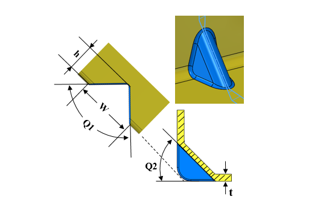

ガセットのパラメータは、ユーザーが指定した値に従っている必要があります。
板材の強度や板厚だけでは不足する曲げ部の剛性を確保するため、成形された部品の一部には補強リブを設ける必要があります。
材料や板厚の制約により、板金ブラケットで一般的に要求される高い剛性を持つ曲げを実現するために、板金の引張強度を単純に高めることは困難です。通常は、より高価で適さない別の材料を使用する必要があります。場合によっては、溶接ガセットを用いて設計を補強することもできますが、その場合はスペースやコストの制約を受けることになります。
これらを実現する最も簡単な方法は、剛性を高めるためにガセットを設けることです。
ガセットの最小幅（W）は、板厚の2倍以上とする必要があります。
ガセットの最大深さ（D）は、板厚の2倍以下とする必要があります。
推奨されるガセット成形角度（Q2）は45度です。
この場合の推奨ガセットヘッド角度（Q1）は、90度以上とする必要があります。
DFMPro はガセット形状を識別し、その深さ、幅、および角度を算出します。算出された値は、構成された設定値と照合されて検証されます。
ガセットの幅および深さは、板厚に対する比率として算出されます。
また、ガセットヘッド角度およびガセット成形角度も、構成された設定値と照合して検証されます。
ユーザーは、デフォルトで構成されている値を編集することができます。

ここでは、
Q1 = ガセット成形角度
Q2 = ガセットヘッド角度
h = ガセットの深さ
t = 板厚
W = ガセットの幅